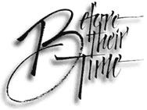

|
Music To Lean On
Since 2001

Ten years ago, after music had provided a few years' comfort following my oldest son's untimely death, I developed an itch to produce a compilation of memorial music by various artists that I hoped might console and help heal parents and others also bereaved by sudden loss. This grew into the three-volume "Before Their Time" collection, whose steady sales around the world have now raised over $50,000 for non-profit bereavement support and suicide prevention organizations. Over 80 artists contributed their songs and performances, including the first-ever recordings of three songs.
Loss is part of everyone's life, but how we experience grief is unique to each of us. Grief and mourning customs vary from culture to culture, but most include a rich tradition of funeral and memorial music.
An unexpected loss is the hardest to deal with, but it is a passage that many families encounter. Individuals find their own ways to cope, and after the loss of a child in our family, I turned to music for comfort, starting with a wonderful song that a friend wrote for our son's service. Then I began to find songs by many artists that also offered spiritual consolation -- Eric Clapton's "Tears In Heaven" came out that year -- and eventually I collected enough to compile the first volume, though I could not get permission for that song.
Now six CDs in three volumes, this collection of memorial songs provides consolation to survivors after the death of someone close, and helps them heal. Before Their Time makes a unique condolence gift for someone you care about, or for yourself, and the music's comfort far outlasts flowers.
Before Their Time is a resource that promotes healing, and it contains lots more than entertainment. Dedicated to the memory of people who died young -- from accidents, illness and disease, suicide, murder, SIDS or stillbirth, war, terrorism and other causes -- this music helps survivors recover from the emotional trauma and extended grief that follows any premature death. Family members and friends who grieve for lives and hopes that will never be fulfilled, and who often endure grief far longer than for people who have lived long lives, will find much solace in the music.
Visit www.beforetheirtime.org for how to order CDs, song samples you can listen to, full information about the songs and the artists, extensive liner notes and essays, reviews and listener comments, and other interesting grief-support and music links.
Russ Barenberg, "For JL" · Eric Bogle, "No Man's Land" · Gordon Bok, Anne Mayo Muir and Ed Trickett, "Turning Toward the Morning" · Anne Dodson, "Jane's Whistle" · Priscilla Herdman, "The Water Lily" · Anne Hills, "Angle of the Light" · Sydney Long and Liz Kalter-Long, "Breck's Song" · Tim O'Brien, "Time To Learn" · Tom Paxton, "No Time To Say Goodbye" · "Lux Aeterna" from John Rutter's Requiem · Jim Stewart and Bernie Houlahan, "Language of the Heart" · Sweet Honey In The Rock, "Patchwork Quilt" · Christina Tourin, "Unité" · Jay Ungar, "Ashokan Farewell"
Volume II
Sarah Bauhan, "Lament for Elizabeth Anne Forbes" · Rachel Bissex, "In the Middle" · Don Bray, "One Less Weary Witness" · Cindy Bullens,"Somewhere Between Heaven and Earth" · Eva Cassidy, "Over the Rainbow" · Beth Neilsen Chapman, "Sand and Water" · Slaid Cleaves, "29" · Phil Cunningham, "Air for Mary Tipton" · Malcolm Dalglish and the Ooolites, "Epitaph" · Connie Kaldor, "Down to a River" · Jez Lowe, "Last of the Widows" · Karen Nash, "Didn't You Think Anybody Loved You?" · Ellis Paul, "Conversation with a Ghost" · Kate Rusby, "Who Will Sing Me Lullabies?" · Jacqueline Schwab, "O'Connell's Lamentation" · Anke Summerhill, "Stillness of the Night" · Jim Wilson, "'Til I See You Again"
Volume III
Terri Allard, "Bright Day" · Joan Baez, "In the Quiet Morning" · T.S. Baker, "Save for the Moon" · Eric Bogle, "One Small Star" · Calaveras, "Ready To Fly" · Kate Callahan, "Dancing Over Me" · Dave Carter and Tracy Grammer, "When I Go" · Aoife Clancy, "Silvery Moon" · Dana Cunningham, "Wild Geese" · Connie Dover, "Rosemary's Sister" · Amy Fairchild, "Tuesday" · Alasdair Fraser and Paul Machlis, "Niel Gow's Lament" · Kerry Getz, "Inhale" · Robin Greenstein, "Slow Burn" · Greg Greenway, "She's Just Gone" · Carrie Hamby,"Singing in the Meadow" · Marie-Lynn Hammond, "Omaha" · Anne Hills, "Some Boats" · Bill Isles, "Big Girl Now" · Michael Jerling, "Doubter's Prayer" · Johnsmith, "What Is" · Jack Kid, "So Many Angels" · Nadine Laughlin, "Go East" · Joel Mabus, "Snow on the Water" · Tommy Makem, "Four Green Fields" · David Mallett, "Closer to Truth" · Kathy Mattea, "Ashes in the Wind" · Deidre McCalla, "Sing Me To Sleep" · Mary McCaslin, "Old Friends" · Heather McLeod, "Basket of Roses" · Carrie Newcomer, "The Gathering of Spirits" · Kristina Olsen Tynes, "The Art of Being Kind" · Peter Ostroushko, "Hymn: Page 9/11" · Darryl Purpose, "Bryant St." · Rain Dance, "Distant Shorelines" · Paul Reisler, "Peace of Wild Things" · Leslie Ritter and Scott Petito, "More Time" · David Roth, "Catherine and Georgia" · Ben Sands, "Wish I Had a Penny" · Sam Shaber, "Rain and Sunshine" · Cosy Sheridan, "George and His 88 Keys" / "Grand Design" · Small Potatoes, "1000 Candles, 1000 Cranes" · Mark Spoelstra, "Mimi's Path" · Still On The Hill, "I Saw You There" · Kate Taylor, "I Will Fly" · Jay Ungar and Molly Mason, "The Quiet Room" · UVMC Youth Chorus, "Onawa's Waltz" and "What Is White?" · Jon Vezner, "You're Gone" · Russell Walden, "Gather Up the Lilies" · Cheryl Wheeler, "If It Were Up to Me"
|